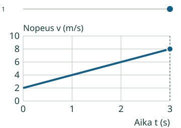
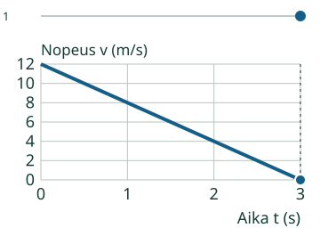
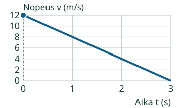
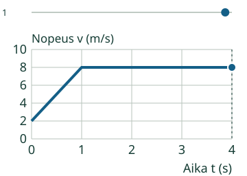

Aava selvittää, miten veneen nopeus muuttuu.
Lasken nopeuden muutoksen sekuntia kohti.
Muutos = loppu − alku. Jaa kuluneella ajalla.
Mistä tämän huomaa?
Vene on jo liikkeessä
Nopeus kasvaa 2 m/s:sta 8 m/s:iin kolmessa sekunnissa.
- Muutos: 8 − 2 = 6 m/s.
- Kulunut aika: 3 s.
- Keskimääräinen kiihtyvyys: 6 m/s / 3 s = 2 m/s².

Jarrutuksessakin vähennetään samassa järjestyksessä
Oikea suunta on plus. Nopeus pienenee 12 m/s:sta nollaan kolmessa sekunnissa. Muutos on 0 − 12 = −12 m/s. Jako antaa −4 m/s².

Jos nopeus pysyy 5 m/s:ssa, muutos on 0. Silloin kiihtyvyys on 0, vaikka vene liikkuu.
Kokeile itse
Oikea suunta on plus. Nopeus pienenee 12 m/s:sta nollaan 3 sekunnissa. Laske kiihtyvyys, m/s².
Loikka

Ajattelun tueksi
Muutos on 0 − 12 = −12 m/s. Jaa kolmella. Miinus säilyy.
Kuvaajan tiedot taulukkona
| Aika (s) | Loikka |
|---|---|
| 0 | 12 |
| 3 | 0 |
Tehtävällä on oma kuvaajansa. Ylempää mallia voi tutkia erikseen, eikä sen katsominen tai toistaminen ole pakollista. Voit käyttää apua ja taulukkoa; ne ovat tukea, eivät itsenäisen hallinnan näyttö.
Vertaa toiseen tilanteeseen
Keskimääräinen ei ole aina joka hetken arvo
Uudessa mallissa nopeus kasvaa ensin 2 → 8 m/s yhdessä sekunnissa ja pysyy sitten kolme sekuntia samana. Koko neljän sekunnin keskimääräinen kiihtyvyys on (8 − 2) / 4 = 1,5 m/s².

Laske kulunut aika: kellon hetkien 2 s ja 6 s väli on 6 − 2 = 4 s. Pelkkä kellon loppulukema ei aina ole jakaja.
Opettajalle ja ilman ruutua
Luokat 7–9. Kanoninen rooli atomic ja pakollinen PHY79-ACCEL-CONCEPT säilyvät. Lasketaan keskimääräinen kiihtyvyys nopeuden kokonaismuutoksesta ja kuluneesta ajasta. Vakion kiihtyvyyden mallit ja muuttuvan kiihtyvyyden keskiarvo erotetaan. Näiden mallien nopeus on ei-negatiivinen yhdellä suoralla akselilla. Miinuskiihtyvyys ei yleisesti tarkoita hidastumista, jos suunta voi olla myös negatiivinen; sellaisia nopeusmalleja tämä sivu ei tue.
Kirjoita paperille alku- ja loppunopeus sekä kulunut aika. Rakenna lasku ja nimeä muutos, aika ja kiihtyvyys omilla yksiköillään. Graafin katsominen ei ole edellytys lukutehtävän ratkaisemiselle. Mallin piste esittää veneen mitattavaa kohtaa, ei Aavan kokoa.
Vain nimetyt äärelliset mallit metreissä ja sekunneissa. Akselit, alueet, kulkusuunta, lähtöpaikka, askel ja katselunopeus on ilmoitettu mallissa. Kuljetun matkan mallin oikealle kulkeminen on erikseen sovittu; kuvaaja ei yksin määrää suuntaa. Tuntematon tai epätuettu arvo ei korvaudu oletuksella. Ruudun piste on yksi mitattava kohta suoralla, ei kuva maastosta tai hahmon koosta. Ei 2D-reittejä, voimia tai mielivaltaista käyttäjän antamaa simulaatiota.
Paikallinen palaute koskee vain nykyisiä vastauksia. Ei formaalia oppijahistoriaa, hallintapäätöstä, viivästettyä näyttöä tai riippumatonta prosessirubriikkia. Vihje, esimerkki ja taulukko ovat tukea. Ei aikarajaa, pakollista puhetta, kuuntelua, nimeämistä tai tiettyä klikkausreittiä. Lukuvastauksessa hyväksytään samanarvoinen desimaaliluku tai kokonaislukujen murtoluku, myös etunollat, merkit ja nolla. Ei laskulausekkeita tai hiljaista pyöristystä. Enintään 128 merkkiä/kenttä.
Lopuksi: Miksi loppunopeus yksin ei riitä? Voiko keskimääräinen kiihtyvyys olla0, vaikka nopeus on muu kuin0?